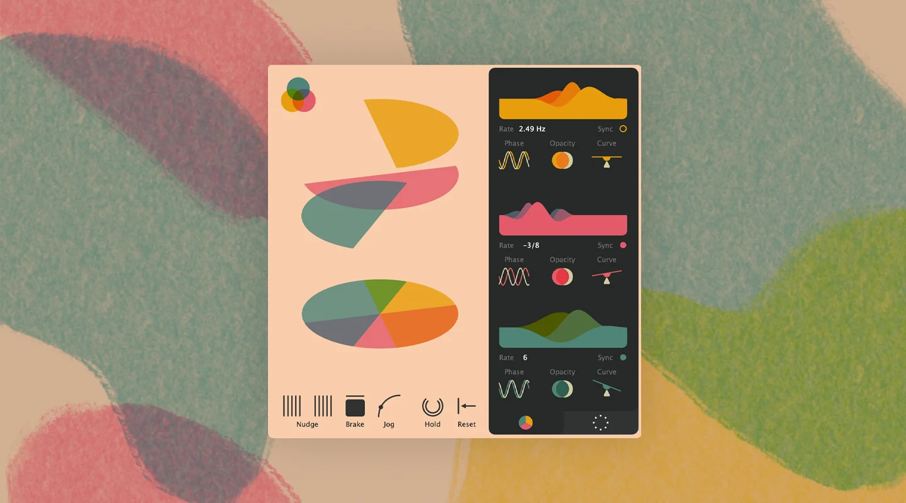

Tinge is a colorful performance arpeggiator. Familiar as a color wheel, we've conceived of temporal optical mixing at its
most audio. The combined opacity of the 3 discs specifies velocity and MPE pressure for the notes splayed around. The
rotation of each is turntable like; with options to speed up, wheel up, reset, and brake.
Born of a disconnect we experienced in functions common with older analog synths and now largely absent in
"cutting-edge" DAWs. A VST/AU plugin that can play in sync'd time, free time (responsive yet adrift), wildly stochastic,
or any combination therein. A bold transformer to your painterly chord progressions and flamboyantly gaudy sound
designs.
Daedelus and Rainbow Circuit have worked together previously on Failure a modeling
plugin of speakers at their brink. This same invention has been brought into Tinge for even more lurid results.
Minimum Requirements:
Windows: Windows 10 or 11 | Mac: macOS 10.14 or newer